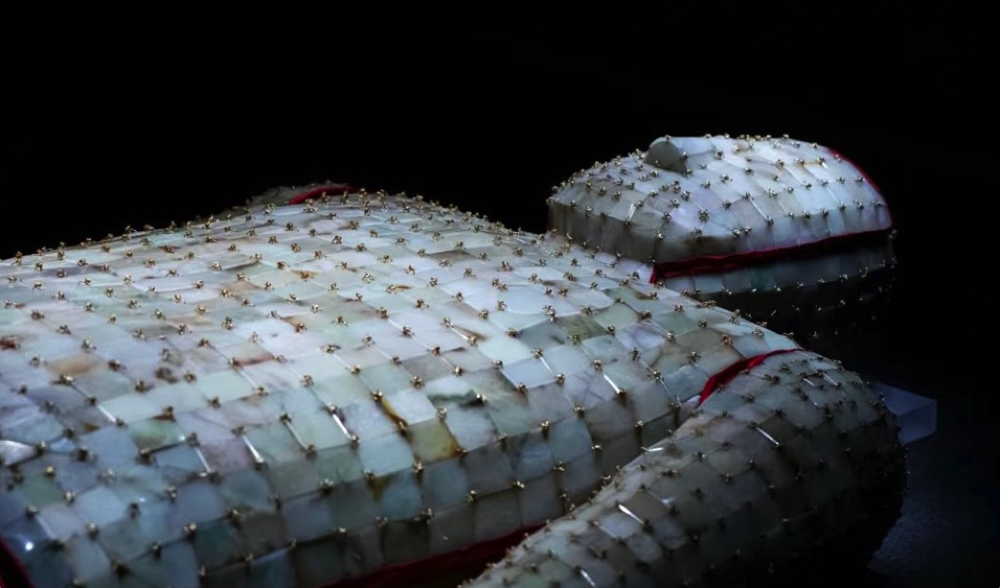

The jade suit is a high-end burial shroud that flourished during the Han dynasty; reserved for royalty and high aristocrats, the suit features thousands of tiny jade plaques threaded by gold, silver, copper, or silk. It was believed to protect and preserve the body and soul.
See an interactive map of excavated jade suits in China.